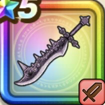

祖竜【理】の銃剣
攻略班 10点 / 変異イオフォース極限集中新世界天超えし竜牙バースト・レインボウいきなり変異イオフォース未体験ゾーンいきなり新世界真・新世界
くわしい特徴
【レベル別習得スキル】 Lv1攻撃力+5 Lv5変異イオフォース（消費MP：17）自身に「変異イオフォース」を付与。イオフォースの効果に加え攻撃時のみ対象のイオ耐性を強制的に大きく減らす(戦闘中1回のみ使用可能) Lv10極限集中（消費MP：最大MPの10%）次に与える斬撃・体技ダメージを一撃だけ2.25倍にしてゾーン状態になる(戦闘中1回のみ使用可能) Lv20新世界（消費MP：最大MPの2%）領域「新世界」を発動する(戦闘中1回のみ使用可能) Lv30天超えし竜牙（消費MP：62）敵全体に敵の数に応じ威力1000〜1700%に変化するガード・みかわし無効の会心が超会心になるフォース強化斬撃(メタル系に+120)を与える Lv33ドッペル系へのダメージ+5% Lv36ゾンビ系へのダメージ+5% Lv40攻撃力+12 Lv45【両】スキルの斬撃ダメージ+3% Lv46【両】全属性ダメージ+3% Lv50バースト・レインボウ（消費MP：最大MPの30%）敵1体にガード・みかわしされず威力2000〜3000%の会心が超会心になる全属性斬撃を与える(自身を含むゾーン中の味方2人以上で使用可) Lv50いきなり変異イオフォース（消費MP：最大MPの1％）戦闘開始時に自身に「変異イオフォース」を付与。変異イオフォースはイオフォースの効果に加え攻撃時のみ対象のイオ耐性を強制的に大きく減らす Lv50未体験ゾーン（消費MP：最大MPの1%）戦闘開始時に自身がまれにゾーン状態になる。敵にドッペル系が含まれているならゾーン状態になる Lv50いきなり新世界（消費MP：最大MPの2%）領域「新世界」を発動。味方の悪い状態変化と状態異常を防ぎ、発動者が虹枠に装備したこころの色に応じた恩恵を受け、確率でゾーン状態になる Lv50真・新世界（消費MP：最大MP1%）自身がゾーン状態になると超越領域「新世界」を発動する。領域内ではゾーン状態のキャラは一部の領域効果の効果値と発生確率が上昇する Lv50輪廻リローデッド（消費MP：0）自身が最後に死亡してパーティが全滅した時、パーティが戦闘開始の状態で復活できる(パーティ全体で戦闘中1回まで) 【限界突破スキル】 1凸スキルの斬撃・体技ダメージ+7% 2凸スキルの斬撃・体技ダメージ+7% 3凸スキルの斬撃・体技ダメージ+7% 4凸スキルの斬撃・体技ダメージ+7%